Flutter Application
This section describes how to setup and brand the Flutter app source code for your own projects.
Setting up the Flutter App
You must have Flutter development environment already setup to be able to open and run this Flutter app. We use Visual Studio Code and Flutter Plugin for Flutter development. You can follow these guides to setup the environment using VS Code:
- https://flutter.dev/docs/development/tools/vs-code
- https://flutter.dev/docs/get-started/editor?tab=vscode
Once you have the dev environment ready, you can now open the flutter app.
The .ZIP package contains a folder named iot_starter_kit_app which hosts the source code for the flutter app. Extract this folder and then right-click to open this folder with VS Code.
You can start the app right away by hitting the F5 key once you open the project folder in VS code, and it will ask to launch the app in an Emulator or your connected phone, if any.
First build will take a bit longer as the Flutter SDK will download referenced libraries before compiling, it's a one time process.
If everything goes well, and all the dev tools are properly installed, the app shall launch in the Emulator or connected phone.
Renaming and Branding the App
Once you have successfully run the app on the emulator or mobile phone, you would want to brand it to your own project theme and icons. We have included some of the following flutter packages in the project’s .yaml file to update App’s Launcher Icon and App’s Launcher name, but we are mentioning here additional packages to update Android Package Name, iOS Bundle ID as well.
Please follow the official documentation of the following packages to achieve these tasks:
Updating Logo and Launcher Icon
Updating App Launcher Name
Updating Package Name
- https://pub.dev/packages/rename
- https://pub.dev/packages/flutter_rename_app
- https://stackoverflow.com/questions/51534616/how-to-change-package-name-in-flutter
Adding and Updating Language Definitions
The app implements multiple languages and supports RTL languages. We have used a wonderful VS Code Extension flutter-internationalize Link to manage, import and export translations and generate code. Our utility class LocaleDelegate in file utils/locale_delegate.dart takes care of the translation definitions.
The extension flutter-internationalize lets you visually add new language definition JSON files, which are generated in the locales/ folder and the Dart code for definitions is generated in the
/lib/generated/locale_base.dart file.
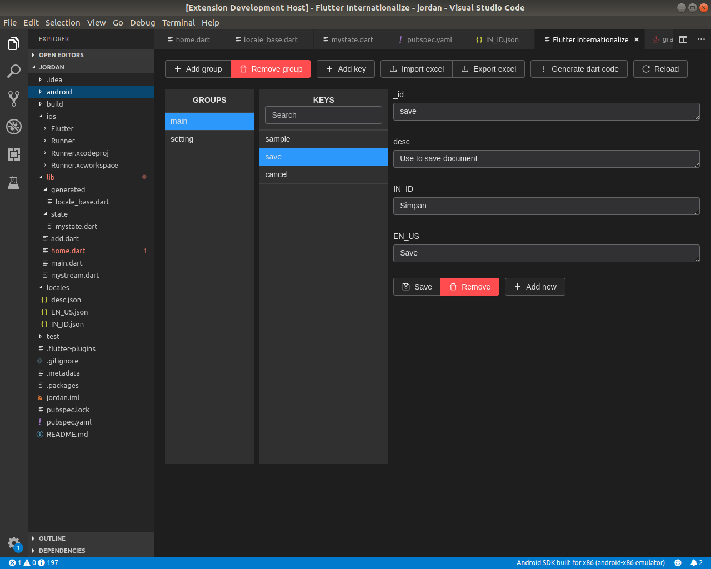
VS Code Extension and Source Code
Please follow the steps below the setup new language, or update language labels for any specific language in the app.
- Setup app's locale list in the [_languages] HashMap 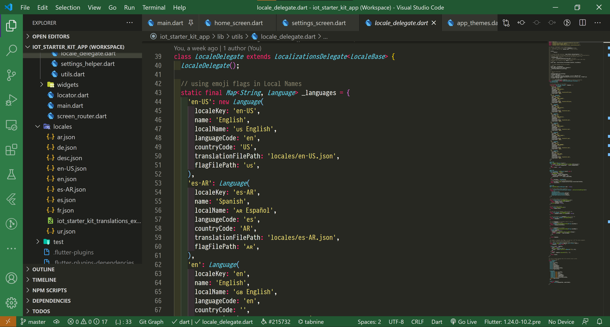
The language setup here will automatically appear in the language drop-down on the settings screen.
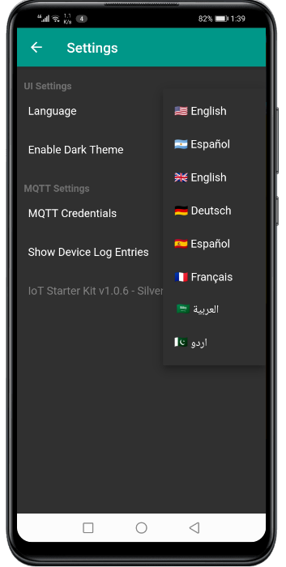
-
Install VS Code extension
flutter-internationalizefrom https://marketplace.visualstudio.com/items?itemName=apin.flutter-internationalize to manage, import and export translations and generate code in the/lib/generatedfolder -
Setup your App widget for locale using
LocaleDelegateclass: 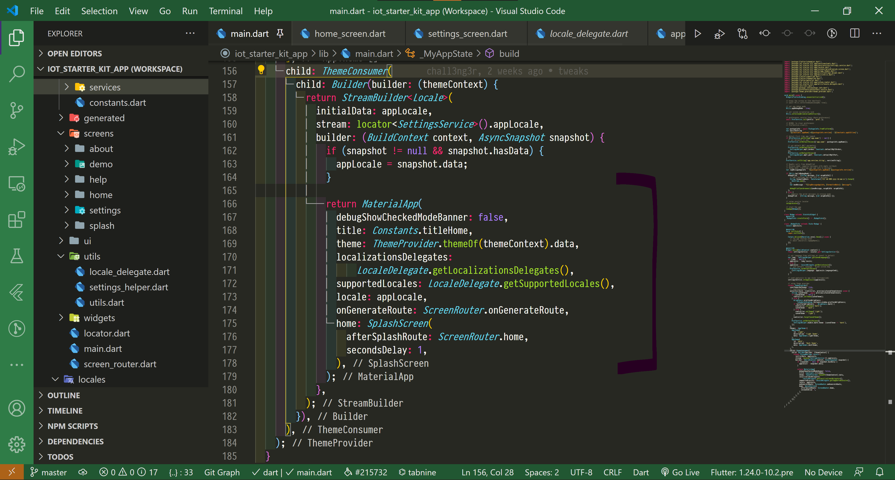 -
Import /lib/generated/locale_base.dart file in your code file where you want to use translations
-
Get a reference to the current language dictionary in your code using following call, usually in the build methods: 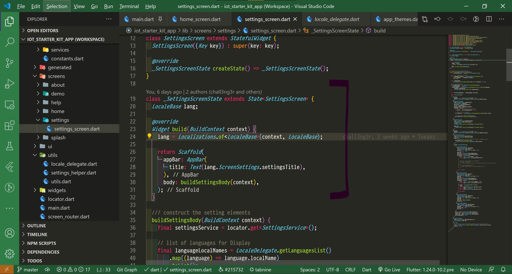
Or something like this:
dart
final lang = Localizations.of<LocaleBase>(context, LocaleBase);
Or load language directly on demand:
dart
final lang = LocaleBase();
lang.load('locales/en_US.json').then((v) {
print(lang.HomeScreen.greeting);
}
- Now use the translations like this:
dart
Text(lang.HomeScreen.greeting);
// output "Welcome!"
// the `lang.HomeScreen.user_greeting` is set as "Welcome {}!"
Text(LocaleDelegate.render(lang.HomeScreen.user_greeting, args: ["John"],));
// output "Welcome John!"
- Check
LocaleDelegate.render()method on templated translations
Using Google Translate to Add New Languages
You can export language definitions in an Excel sheet using the Internationalize extension, then upload that excel sheet to Google Docs and use Google Translate formula: =GOOGLETRANSLATE(cell with text, "source language", "target language") in a new language column in each tab to translate from exiting languages to new languages.
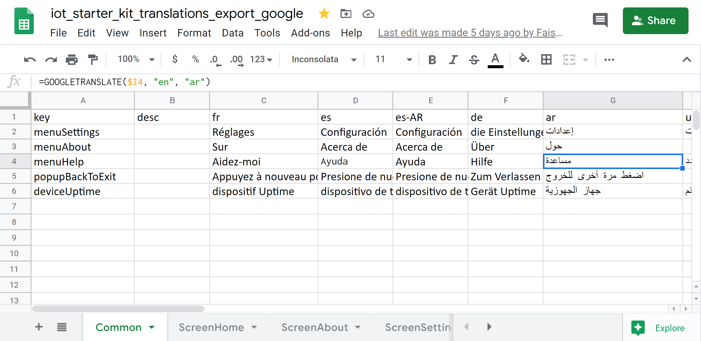
For example, if you want to add Persian language translated fro English, you would add a new column with header as language code fa and paste the Google Translate formula like this this the column:
=GOOGLETRANSLATE($I4, "en", "fa") where:
- $I4 is the column with English text (source)
- "en" is the source language
- "fa" is the target language
Once you have translated for the new language, you can download the .xls file, and import this file using the Internationalize extension, and it will generate appropriate .json file and corresponding dart code in your project.
The App UI Explained
Home Screen
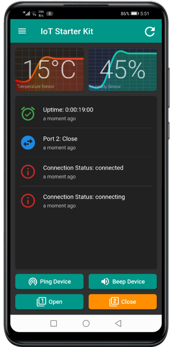
The home screen has Graphs for Temperature and Humidity data from the sensors on the device. This Graph shows current value of as big Label in the center and a line graph of last six values in the background. The App requests the sensor data every 5 seconds from the device.
There is an event List View after the Graphs, which shows all the app events, form connectivty to commands ans responses. The list view only keep last 30 events in the cache.
After the List View, there are Four buttons which send commands to the device and react upon response from the device. These are:
-
Ping Button: Sends a "Ping" command to the device and changes its color, and resets the color back to normal on arrival of response form the device. This is used to check if the device is connected with the internet and is able to respond to other commands, without having to turn on/off and other port, or appliance with the port.
-
Beep Button: Sends a "Beep" command to the device and changes its color, and resets the color back to normal on arrival of response form the device. This is used to check if the device is connected with the internet and is able to respond to other commands with you are in the audible range with the device, without having to turn on/off and other port, or appliance with the port.
-
Port1 Button: This button demonstrate the "Bounce" effect on a port, where a port on the device is in One state permanently, then upon a command from the app, it change its state to other state for a amount of time, and then "Bounces" back the original state. This can be used in scenarios where you have to turn an appliance on for little amount of time, for example a door lock.
-
Port2 Button: This s simple toggle button, and be used to read and set the port state on demand. The button show what state the port currently is in and you can press the button to send a command to toggle the state of the port. This is useful to turn any connected appliance on or off, on demand.
The Home screen also has a drawer menu which show device uptime in the header: 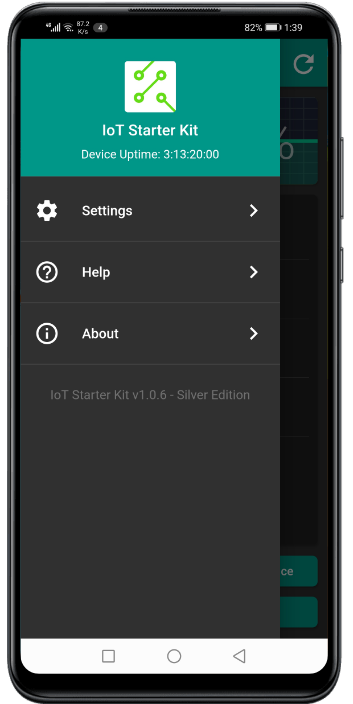
Settings Screen
The settings screen lets you set language, dark or light theme, MQTT credentials and if the List View on how page shall show the log entries from the device, which is sent on /log MQTT topic.
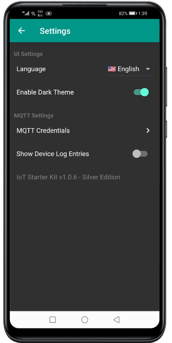
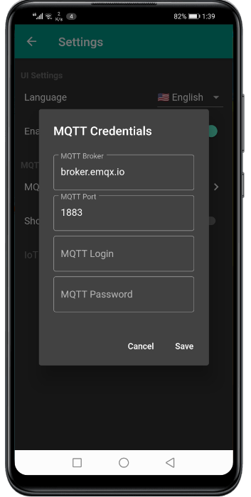
About Screen
This screen shows information about the application, and can be branded as per yor projects. The Readme, License and the Changelog screens are driven by Markdown file which a located in the /assets/docs folder. You can easily update the content of these files using standard Markdown Syntax without having to write Dart code. Please visit https://www.markdownguide.org/ for help on Markdown syntax and formatting.
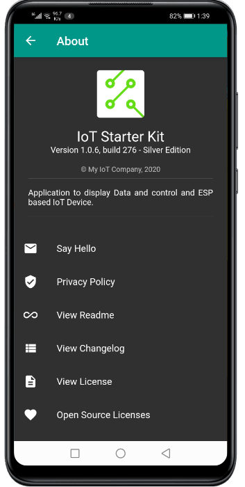
Help Screen
You can use the Help screen to show general information on how to use the app. Like the Readme, License and the Changelog screens, Help screen is also driven by Markdown file help_screen.md which a located in the /assets/docs folder. You can easily update the content of these files using standard Markdown Syntax without having to write Dart code.
Enabling Multiple Languages in Markdown Files
To provide content on additional languages in Markdown driven screen (Readme, License, Changelog and Help), you can place additional files with locale name in file names
in the assets/docs/ folder and the appropriate language file will be automatically picked by the app as per the current locale. For example, file help_screen-fr.md will be picked for when the French language is selected, and file help_screen-ar.md will be shown when the Arabic language is selected.